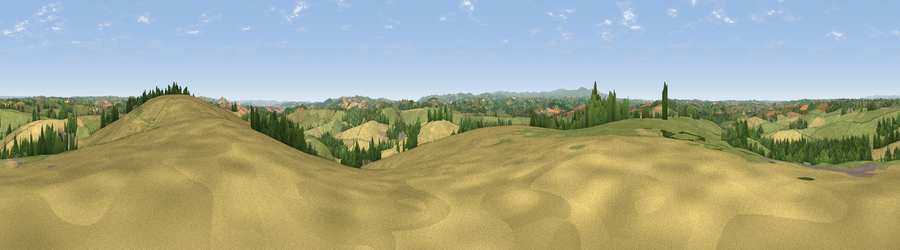

Viewpoint near Copplestone
#10350 in England · top 12% of its area beats it · near CopplestoneWhere it is
The exact computed spot (SS 78875 03075). Click the marker for map links.
The view, rendered

A 360° render of this exact spot computed from the terrain model, tree cover and land cover — summer colours, afternoon light, calibrated against photographs of famous viewpoints. Real trees, hedges and buildings will differ in detail.
The panorama
Grey silhouette: terrain skyline in each direction (720 bearings, Earth curvature and refraction included). Dashed green: skyline with trees (+15 m) and buildings (+8 m) as obstacles. Blue strip: how far the ground is visible on each bearing.
Where the view opens
Wedge length = distance to the farthest visible ground on that bearing (vegetation-aware). Rings at 10, 25 and 50 km.
What fills the view
51% grassland · 37% cropland · 11% woodland ·
Angular shares of the visible panorama (visual magnitude), not map area. Landscape diversity 0.43 (0–1 Shannon).
Key numbers
More beautiful places nearby
The staircase of upgrades: each row has a higher view potential than everything closer. Driving times are estimates from straight-line distance, calibrated against real road routing — check an actual route before setting out.
| Place | Direction | Drive | Score |
|---|---|---|---|
| Woolsgrove Hill | ENE · 0 km | ~2 min | 64.0 |
| Viewpoint near Venny Tedburn | SSE · 6 km | ~13 min | 70.1 |
| Viewpoint near Pathfinder Village | SE · 9 km | ~18 min | 71.0 |
| Viewpoint near Stockleigh Pomeroy | E · 10 km | ~19 min | 74.7 |
| Viewpoint near Stockleigh Pomeroy | E · 11 km | ~20 min | 78.9 |
| Viewpoint near Whitestone | SE · 11 km | ~21 min | 79.8 |
| Viewpoint near Kenn | SSE · 23 km | ~38 min | 80.0 |
| Viewpoint near Haytor Vale | S · 25 km | ~41 min | 80.1 |
50.81452, -3.72070 · source: screening · position refined by local search. Computed location — check access rights before visiting.